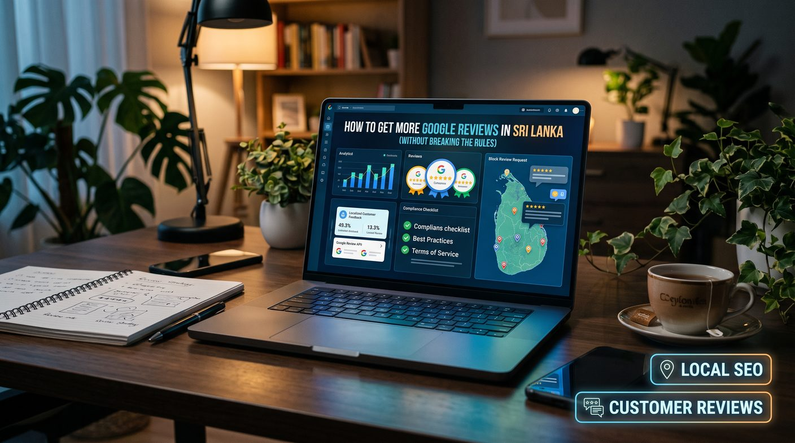

To get more Google reviews in Sri Lanka, create your direct review link from your verified Business Profile, then invite every genuine customer to share honest feedback after a purchase or service, using WhatsApp, a QR code or a service-completion message. Keep requests neutral and optional, never offer rewards, ask for specific ratings, screen for happy customers or buy reviews, and reply professionally to all feedback.
- Why Google reviews matter for Sri Lankan businesses
- Understand Google's review rules before asking customers
- 1. Create your direct Google review link
- 2. Ask customers at the right moment
- 3. Use WhatsApp to request reviews in Sri Lanka
- 4. Add a Google review QR code to your business
- 5. Train staff to invite honest feedback
- 6. Make review requests part of your customer journey
- 7. Respond to existing Google reviews
- 8. Measure review growth without chasing fake numbers
- 9. What to do if Google removes reviews
- 10. A practical 30-day Google review plan
- Conclusion
Why Google reviews matter for Sri Lankan businesses
Google reviews are visible on eligible Google Business Profiles and help customers assess a business before calling, visiting a location or making a purchase. Reviews may describe service quality, product reliability, communication, pricing and the overall customer experience.
A strong review process can help your business in several ways:
- Build customer trust: genuine experiences give prospective customers more information about your business.
- Support local visibility: reviews and other reputation signals can contribute to how customers discover and evaluate local businesses.
- Improve conversion opportunities: helpful reviews may make a customer more comfortable contacting your business.
- Identify service problems: feedback can reveal recurring issues that need attention.
- Understand customer priorities: reviews may show which services, products or parts of your customer experience people value most.
Reviews do not guarantee higher rankings or more sales. Local search performance also depends on relevance, distance, prominence, competition and the quality of your wider online presence.
To build a broader local search strategy, visit our local SEO services page, and make sure the profile itself is set up properly with our Google Business Profile optimization guide.
Understand Google's review rules before asking customers
The safest review strategy starts with one principle: ask real customers for honest feedback and let them decide what to write. Google permits businesses to request genuine reviews, but prohibits practices that manipulate ratings or artificially influence review content.
Before launching a review campaign, avoid these practices:
- Buying reviews: do not pay individuals or services to publish fabricated or manipulated reviews.
- Offering rewards for reviews: do not offer cash, discounts, gifts, free products or other incentives in exchange for Google reviews.
- Asking only happy customers: do not selectively request public reviews from customers you expect to be positive while directing dissatisfied customers elsewhere.
- Requesting specific ratings: do not ask customers to leave five stars or require a particular score.
- Writing reviews yourself: do not create fake customer accounts or post reviews pretending to be a customer.
- Pressuring customers: do not repeatedly contact people after they decline, or make a review a condition of receiving service.
- Manipulating review content: do not ask customers to include particular keywords, competitors' names or promotional claims.
A compliant request invites an honest review without influencing its rating or content. For the latest requirements, consult Google's official user-generated content policy and its guidance on getting more Google reviews.
1. Create your direct Google review link
One of the simplest ways to increase review participation is to make the process easy. If customers have to search for your business, find the correct listing and locate the review option themselves, some will give up.
A direct review link takes customers to the appropriate Google Business Profile review flow.
- Sign in to the Google Account that manages your verified Business Profile.
- Open your Business Profile using Google Search or Google Maps.
- Find the option to request reviews or share your review link.
- Copy the official link provided by Google.
- Open the link in a separate browser or device to check that it leads to the correct business and review process.
- Save the link where your team can access it when communicating with customers.
The exact interface can change. Use the review-sharing option available in your profile rather than copying an unrelated Google Maps URL.
Keep the message that accompanies the link short. Explain that you welcome honest feedback, and make it clear that leaving a review is optional.
2. Ask customers at the right moment
Timing can make a review request feel natural. Consider when the customer has had enough experience with your business to give meaningful feedback, without waiting so long that the interaction is forgotten.
Examples of appropriate moments include:
- Retail shops: after a completed purchase, where a customer interaction provides a natural opportunity.
- Restaurants and cafés: after the dining experience, without interrupting the meal or pressuring the customer.
- Service providers: after completing the agreed service or project.
- Hotels and tourism businesses: after the stay, tour or service has concluded.
- Professional services: after a meaningful service milestone, provided the request respects confidentiality and professional obligations.
Do not repeatedly ask the same person across several channels. A single polite request and, where appropriate, one reasonable follow-up usually work better than persistent messages.
3. Use WhatsApp to request reviews in Sri Lanka
WhatsApp is a familiar communication channel for many Sri Lankan customers. Businesses that already use it for legitimate customer communication can include a review request after completing a transaction or service.
Use the customer's preferred communication channel, follow applicable privacy and messaging requirements, and avoid sending unsolicited bulk messages. A review request should not reveal private customer details or imply that a review is required.
WhatsApp review request template
Hi [Customer Name], thank you for choosing [Business Name]. We appreciate your support. If you have a moment, we'd welcome your honest feedback about your experience on Google:
[Google Review Link]
Leaving a review is completely optional. Thank you for supporting our business.
Personalise the message where appropriate, but do not tell the customer what rating to give or what to write. If you communicate in Sinhala or Tamil, use a natural translation that keeps the same neutral request for honest feedback.
4. Add a Google review QR code to your business
A QR code helps customers open your review link without typing a web address. It is useful for physical businesses such as shops, restaurants, salons, clinics where appropriate, and service counters.
You can create a QR code from your direct Google review link and place it on suitable materials, such as:
- A small sign at the checkout counter.
- A receipt or invoice, where practical.
- A table card in a restaurant or café.
- A service-completion card.
- A printed customer information sheet.
Include a simple message such as "Share your honest feedback on Google." Test the QR code on several phones before printing a large batch, and check the destination periodically.
Do not pair the QR code with an offer, prize draw or reward in exchange for a review. Make sure customers can decline without affecting the service they receive.
5. Train staff to invite honest feedback
For businesses with several employees or branches, a consistent process helps avoid awkward or non-compliant requests. Staff should understand that the goal is to invite genuine feedback, not to pressure customers into giving positive ratings.
A simple staff process can include:
- Complete the customer's transaction or service first.
- Ask politely whether they would be willing to share honest feedback.
- Give every customer the same neutral review link or QR code, without screening them by satisfaction level.
- Never ask the customer to show their review before leaving or to give a particular rating.
- Record that the request was made only when necessary for internal process tracking, and handle customer information appropriately.
Do not set staff incentives based on five-star reviews or pressure employees to generate a specific rating. If you monitor review activity, focus on whether the request process is consistent and whether customer feedback is helping improve service.
6. Make review requests part of your customer journey
Businesses often struggle to collect reviews because requests depend on someone remembering to send a message. A simple, repeatable process makes requests more consistent without making them intrusive.
Consider adding a review invitation to appropriate customer touchpoints:
- A service-completion email or message.
- A post-purchase communication.
- A follow-up after a completed project.
- A printed invoice or service document.
- A customer support conversation after the issue has been resolved.
For recurring customers, avoid asking after every small interaction. Choose meaningful points in the relationship and respect any request from a customer not to receive further messages.
If you automate review invitations, use genuine transaction or service-completion events, keep the wording neutral, protect personal information and make sure the system does not filter requests based on predicted customer sentiment.
7. Respond to existing Google reviews
Getting new reviews is only one part of managing your online reputation. Responding to existing reviews shows that your business pays attention to customer feedback and gives helpful context to future customers.
How to respond to positive reviews
Thank the customer, refer naturally to the experience they described and keep the reply personal. Avoid posting the same generic response to every review or adding repetitive keywords to manipulate search visibility.
Thank you for sharing your feedback and choosing [Business Name]. We're glad you had a positive experience with our team and appreciate your support.
How to respond to negative reviews
Stay professional, acknowledge the concern and offer an appropriate way to resolve the issue. Do not publish private order details, personal information or accusations about the reviewer.
Thank you for bringing this to our attention. We're sorry to hear that your experience did not meet expectations. We'd appreciate the opportunity to understand what happened and address your concerns. Please contact us through [appropriate contact channel] so we can look into this.
Do not offer a refund, discount or other benefit on the condition that a customer removes or changes a review. If a review violates Google's policies, use the official reporting process instead of arguing publicly.
8. Measure review growth without chasing fake numbers
Track whether your review process is working, but avoid treating the total review count as the only measure of success.
Useful metrics can include:
- New genuine reviews: how many new reviews arrive over a given period.
- Request consistency: whether eligible customers receive the same neutral invitation.
- Response time: how promptly your business addresses feedback.
- Recurring themes: what customers repeatedly praise or identify as needing improvement.
- Business outcomes: whether calls, enquiries, bookings or sales improve over time.
A restaurant, for example, can review its feedback monthly to spot recurring comments about waiting times, menu clarity or service. A software or IT service provider can look for patterns in communication, setup and support.
Compare performance over reasonable periods and account for seasonality, customer volume and other marketing activity. Do not assume that an increase in reviews alone caused a change in rankings or sales. Profile-level measurement is covered in step 12 of our Google Business Profile guide.
9. What to do if Google removes reviews
Google may remove reviews that violate its policies, and automated systems can sometimes affect legitimate content. A sudden change in review count does not automatically mean your profile has been penalised.
If reviews disappear:
- Check whether the reviews are still visible on your profile and whether the count has changed.
- Review Google's policies on prohibited and restricted content.
- Check whether your business has received a policy notification or restriction.
- Use Google's official support or appeal process if you believe legitimate reviews were removed incorrectly.
- Continue requesting honest reviews through compliant methods.
Do not try to replace removed reviews by buying new ones, asking staff to post reviews or creating duplicate profiles. Those actions can create additional problems.
10. A practical 30-day Google review plan
A month is enough to establish a consistent review process, although it does not guarantee a specific number of new reviews or a ranking improvement.
Week 1: set up the process
- Confirm access to the correct Google Business Profile.
- Generate and test the direct review link.
- Create a neutral WhatsApp or email template.
- Prepare a QR code if your business serves customers in person.
Week 2: introduce consistent requests
- Choose appropriate moments to invite feedback.
- Explain the process to relevant staff.
- Give eligible customers the same opportunity without screening for positive sentiment.
- Check that requests are polite, optional and not repeated excessively.
Week 3: improve customer experience
- Read new and existing reviews.
- Identify recurring praise and complaints.
- Address service issues within your control.
- Respond professionally to reviews that need a reply.
Week 4: review and refine
- Check the number and quality of genuine reviews received.
- Assess whether your request process is easy for customers.
- Review customer feedback for operational improvements.
- Continue the process and adjust only where the evidence supports a change.
Conclusion
The most sustainable way to get more Google reviews in Sri Lanka is to make honest feedback easy to share. Create a direct review link, use suitable customer communication channels, display a QR code where it helps, train staff to ask neutrally and respond professionally to feedback.
Avoid buying reviews, offering incentives, screening customers by satisfaction or asking for specific ratings. These shortcuts can damage customer trust and put your business profile at risk.
Google reviews are one part of a wider local SEO strategy. If you want help improving your Google Business Profile, website and local visibility, explore our local SEO services or talk to an SEO specialist in Sri Lanka. To see the kind of feedback we collect, visit our customer reviews page.